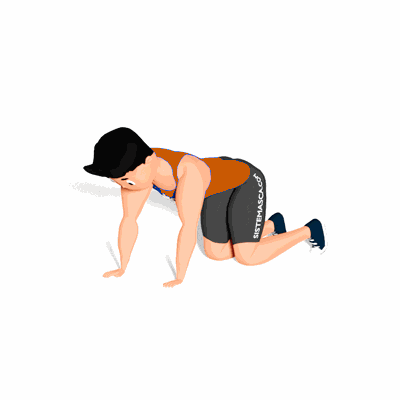

Mobilidade Torácica com Torção

O exercício trabalha a mobilidade torácica, auxiliando nas atividades diárias e atividades físicas.
Ficha Técnica
Tipo: Mobilidade
Grupo Muscular: Peito
Aparelho: Nenhum
Músculos: Nenhum
Como realizar
- Fique em posição de 4 apoios, essa é sua posição inicial;
- Retire o braço direito do solo e realize a torção do tronco para esquerda alongando ao máximo;
- Mantenha nessa posição por alguns segundos e retorne a posição inicial;
- Agora, retire o braço esquerdo do solo e realize a torção do tronco para direita alongando ao máximo;
- Mantenha nessa posição por alguns segundos e retorne a posição inicial;
- Repita os movimentos alternando os lados.
 RC STORE
RC STORE